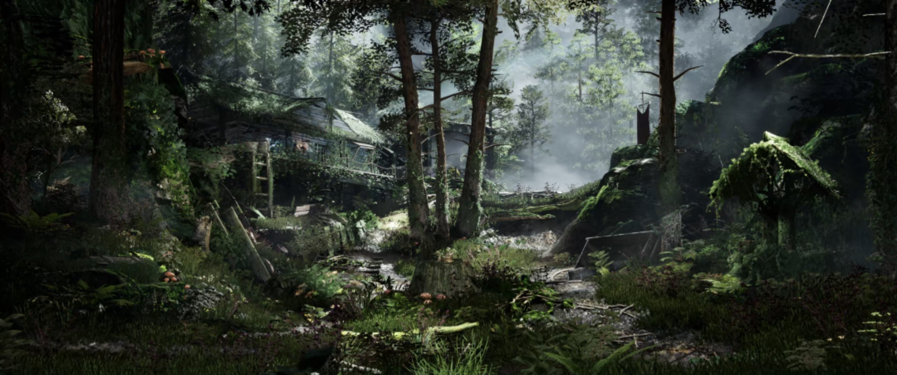

Chengyima｜UE5 环境地编
UE5环境地编，擅长白盒搭建、资产整合、材质光影与场景性能优化，可制作写实与风格化场景。
技能： Unreal Engine 5｜地形雕刻｜资产整合｜光影调试｜性能优化
🌲 写实森林场景

UE5次世代写实林间聚落场景。完成地形规划、资产排布与分层光影雾效，依托Nanite、Lumen构建幽深森林氛围，同步完成场景性能优化。
⛰️ 卡通风格化蒙德山地场景

UE5卡通风格化山地场景。塑造起伏山地地貌，把控风格化色彩与轮廓，设计近景角色镜头与远景大环境镜头，兼顾空间叙事与大场景性能。
🏯 中式雪景古建场景

UE5写实东方雪景场景。依托山地高差布局古建，调试积雪材质与冷调光照，搭配落雪粒子，打造清冷静谧的冬日山林空间。